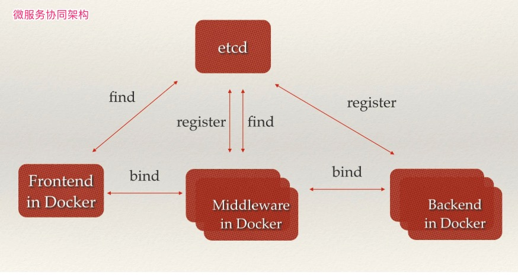

Etcd是一个使用一致性哈希算法(Raft)在分布式环境下的key/value存储服务。利用Etcd的特性，应用程序可以在集群中共享信息、配置或作服务发现，Etcd会在集群的各个节点中复制这些数据并保证这些数据始终正确。
- System Requirements >= 8v CPU + 16GB RAM + 50GB SSD
1. 安装使用
静态就是在配置服务之前已经知道了节点的地址和集群的大小
- [1] 源码编译安装
############################
# Build the latest version
############################
# 1.下载项目并编译
$ git clone https://github.com/etcd-io/etcd.git && cd etcd
$ ./build
To build a vendored etcd from the master branch via go get:
# 2.设置GOPATH环境变量
$ export GOPATH='/Users/example/go'
$ go get -v go.etcd.io/etcd
$ go get -v go.etcd.io/etcd/etcdctl
# 3.启动服务
$ ./bin/etcd
$ $GOPATH/bin/etcd
# 4.简单使用
$ ./bin/etcdctl put foo bar
OK
- [2] 部署单机单服务(静态)
##################################
# Running etcd in standalone mode
##################################
# 1.设置启动的Node地址
$ export NODE1='172.16.176.52'
# 2.创建一个逻辑存储
$ docker volume create --name etcd-data
# 3.启动etcd服务
# 正式的ectd端口是2379用于客户端连接，而2380用于伙伴通讯
# --data-dir: 到数据目录的路径
# --initial-advertise-peer-urls: 集群中节点间通讯的URL地址
# --listen-peer-urls: 集群中节点间通讯的URL地址
# --advertise-client-urls: 客户端监听的URL地址
# --listen-client-urls: 客户端监听的URL地址
# --initial-cluster: 启动初始化集群配置
$ docker run -p 2379:2379 -p 2380:2380 --name etcd \
--volume=etcd-data:/etcd-data \
quay.io/coreos/etcd:latest \
/usr/local/bin/etcd \
--data-dir=/etcd-data --name node1 \
--initial-advertise-peer-urls http://${NODE1}:2380 \
--listen-peer-urls http://0.0.0.0:2380 \
--advertise-client-urls http://${NODE1}:2379 \
--listen-client-urls http://0.0.0.0:2379 \
--initial-cluster node1=http://${NODE1}:2380
# 4.列出现在集群中的服务状态
$ etcdctl --endpoints=http://${NODE1}:2379 member list
- [3] 部署分布式集群服务(静态)
################################
# Running a 3 node etcd cluster
################################
# node1
docker run -p 2379:2379 -p 2380:2380 --name etcd-node-1 \
--volume=/var/lib/etcd:/etcd-data \
quay.io/coreos/etcd:latest \
/usr/local/bin/etcd \
--data-dir=/etcd-data \
--initial-advertise-peer-urls "http://10.20.30.1:2380" \
--listen-peer-urls "http://0.0.0.0:2380" \
--advertise-client-urls "http://10.20.30.1:2379" \
--listen-client-urls "http://0.0.0.0:2379" \
--initial-cluster "etcd-node-1=http://10.20.30.1:2380, etcd-node-2=http://10.20.30.2:2380, etcd-node-3=http://10.20.30.3:2380" \
--initial-cluster-state "new" \
--initial-cluster-token "my-etcd-token"
# node2
docker run -p 2379:2379 -p 2380:2380 --name etcd-node-2 \
--volume=/var/lib/etcd:/etcd-data \
quay.io/coreos/etcd:latest \
/usr/local/bin/etcd \
--data-dir=/etcd-data \
--initial-advertise-peer-urls "http://10.20.30.2:2380" \
--listen-peer-urls "http://0.0.0.0:2380" \
--advertise-client-urls "http://10.20.30.2:2379" \
--listen-client-urls "http://0.0.0.0:2379" \
--initial-cluster "etcd-node-1=http://10.20.30.1:2380, etcd-node-2=http://10.20.30.2:2380, etcd-node-3=http://10.20.30.3:2380" \
--initial-cluster-state "new" \
--initial-cluster-token "my-etcd-token"
# node3
docker run -p 2379:2379 -p 2380:2380 --name etcd-node-3 \
--volume=/var/lib/etcd:/etcd-data \
quay.io/coreos/etcd:latest \
/usr/local/bin/etcd \
--data-dir=/etcd-data \
--initial-advertise-peer-urls "http://10.20.30.3:2380" \
--listen-peer-urls "http://0.0.0.0:2380" \
--advertise-client-urls "http://10.20.30.3:2379" \
--listen-client-urls "http://0.0.0.0:2379" \
--initial-cluster "etcd-node-1=http://10.20.30.1:2380, etcd-node-2=http://10.20.30.2:2380, etcd-node-3=http://10.20.30.3:2380" \
--initial-cluster-state "new" \
--initial-cluster-token "my-etcd-token"
# run etcdctl using API version 3
docker exec etcd /bin/sh -c "export ETCDCTL_API=3 && /usr/local/bin/etcdctl put foo bar"
- [4] 部署分布式集群服务
# 编辑docker-compose.yml文件
version: "3.6"
services:
node1:
image: quay.io/coreos/etcd
volumes:
- node1-data:/etcd-data
expose:
- 2379
- 2380
networks:
cluster_net:
ipv4_address: 172.16.238.100
environment:
- ETCDCTL_API=3
command:
- /usr/local/bin/etcd
- --data-dir=/etcd-data
- --name
- node1
- --initial-advertise-peer-urls
- http://172.16.238.100:2380
- --listen-peer-urls
- http://0.0.0.0:2380
- --advertise-client-urls
- http://172.16.238.100:2379
- --listen-client-urls
- http://0.0.0.0:2379
- --initial-cluster
- node1=http://172.16.238.100:2380,node2=http://172.16.238.101:2380,node3=http://172.16.238.102:2380
- --initial-cluster-state
- new
- --initial-cluster-token
- docker-etcd
node2:
image: quay.io/coreos/etcd
volumes:
- node2-data:/etcd-data
networks:
cluster_net:
ipv4_address: 172.16.238.101
environment:
- ETCDCTL_API=3
expose:
- 2379
- 2380
command:
- /usr/local/bin/etcd
- --data-dir=/etcd-data
- --name
- node2
- --initial-advertise-peer-urls
- http://172.16.238.101:2380
- --listen-peer-urls
- http://0.0.0.0:2380
- --advertise-client-urls
- http://172.16.238.101:2379
- --listen-client-urls
- http://0.0.0.0:2379
- --initial-cluster
- node1=http://172.16.238.100:2380,node2=http://172.16.238.101:2380,node3=http://172.16.238.102:2380
- --initial-cluster-state
- new
- --initial-cluster-token
- docker-etcd
node3:
image: quay.io/coreos/etcd
volumes:
- node3-data:/etcd-data
networks:
cluster_net:
ipv4_address: 172.16.238.102
environment:
- ETCDCTL_API=3
expose:
- 2379
- 2380
command:
- /usr/local/bin/etcd
- --data-dir=/etcd-data
- --name
- node3
- --initial-advertise-peer-urls
- http://172.16.238.102:2380
- --listen-peer-urls
- http://0.0.0.0:2380
- --advertise-client-urls
- http://172.16.238.102:2379
- --listen-client-urls
- http://0.0.0.0:2379
- --initial-cluster
- node1=http://172.16.238.100:2380,node2=http://172.16.238.101:2380,node3=http://172.16.238.102:2380
- --initial-cluster-state
- new
- --initial-cluster-token
- docker-etcd
volumes:
node1-data:
node2-data:
node3-data:
networks:
cluster_net:
driver: bridge
ipam:
driver: default
config:
-
subnet: 172.16.238.0/24
# 使用启动集群
docker-compose up -d
# 之后使用如下命令登录到任一节点测试etcd集群
docker exec -it node1 bash
# etcdctl member list
422a74f03b622fef, started, node1, http://172.16.238.100:2380, http://172.16.238.100:2379
ed635d2a2dbef43d, started, node2, http://172.16.238.101:2380, http://172.16.238.101:2379
daf3fd52e3583ffe, started, node3, http://172.16.238.102:2380, http://172.16.238.102:2379
- [5] etcd 常用配置参数
| 配置参数 | 参数说明 |
|---|---|
--name |
指定节点名称 |
--data-dir |
指定节点的数据存储目录，用于保存日志和快照 |
--addr |
公布的 IP 地址和端口；默认为 127.0.0.1:2379 |
--bind-addr |
用于客户端连接的监听地址；默认为–addr 配置 |
--peers |
集群成员逗号分隔的列表；例如 127.0.0.1:2380,127.0.0.1:2381 |
--peer-addr |
集群服务通讯的公布的 IP 地址；默认为 127.0.0.1:2380 |
-peer-bind-addr |
集群服务通讯的监听地址；默认为-peer-addr 配置 |
--wal-dir |
指定节点的 wal 文件的存储目录，若指定了该参数 wal 文件会和其他数据文件分开存储 |
--listen-client-urls |
监听 URL；用于与客户端通讯 |
--listen-peer-urls |
监听 URL；用于与其他节点通讯 |
--initial-advertise-peer-urls |
告知集群其他节点 URL |
--advertise-client-urls |
告知客户端 URL |
--initial-cluster-token |
集群的 ID |
--initial-cluster |
集群中所有节点 |
--initial-cluster-state |
new 表示从无到有搭建 etcd 集群 |
--discovery-srv |
用于 DNS 动态服务发现，指定 DNS SRV 域名 |
--discovery |
用于 etcd 动态发现，指定 etcd 发现服务的 URL |
2. 数据存储
etcd 的数据存储有点像 PG 数据库的存储方式
etcd 目前支持 V2 和 V3 两个大版本，这两个版本在实现上有比较大的不同，一方面是对外提供接口的方式，另一方面就是底层的存储引擎，V2 版本的实例是一个纯内存的实现，所有的数据都没有存储在磁盘上，而 V3 版本的实例就支持了数据的持久化。
我们都知道 etcd 为我们提供了 key/value 的服务目录存储。
# 设置键值对
$ etcdctl set name escape
# 获取方式
$ etcdctl get name
escape
使用 etcd 之后，我们会疑问数据都存储到的那里呢？数据默认会存放在 /var/lib/etcd/default/ 目录。我们会发现数据所在的目录，会被分为两个文件夹中，分别是 snap 和 wal目录。
snap- 存放快照数据，存储
etcd的数据状态 etcd防止WAL文件过多而设置的快照
- 存放快照数据，存储
wal- 存放预写式日志
- 最大的作用是记录了整个数据变化的全部历程
- 在
etcd中，所有数据的修改在提交前都要先写入到WAL中
# 目录结构
$ tree /var/lib/etcd/default/
default
└── member
├── snap
│ ├── 0000000000000006-0000000000046ced.snap
│ ├── 0000000000000006-00000000000493fe.snap
│ ├── 0000000000000006-000000000004bb0f.snap
│ ├── 0000000000000006-000000000004e220.snap
│ └── 0000000000000006-0000000000050931.snap
└── wal
└── 0000000000000000-0000000000000000.wal
使用 WAL 进行数据的存储使得 etcd 拥有两个重要功能，那就是故障快速恢复和数据回滚/重做。故障快速恢复就是当你的数据遭到破坏时，就可以通过执行所有 WAL 中记录的修改操作，快速从最原始的数据恢复到数据损坏前的状态。数据回滚重做就是因为所有的修改操作都被记录在 WAL 中，需要回滚或重做，只需要方向或正向执行日志中的操作即可。
既然有了 WAL 实时存储了所有的变更，为什么还需要 snapshot 呢？随着使用量的增加，WAL 存储的数据会暴增。为了防止磁盘很快就爆满，etcd 默认每 10000 条记录做一次 snapshot 操作，经过 snapshot 以后的 WAL 文件就可以删除。而通过 API 可以查询的历史 etcd 操作默认为 1000 条。
首次启动时，etcd 会把启动的配置信息存储到 data-dir 参数指定的数据目录中。配置信息包括本地节点的ID、集群ID和初始时集群信息。用户需要避免 etcd 从一个过期的数据目录中重新启动，因为使用过期的数据目录启动的节点会与集群中的其他节点产生不一致。所以，为了最大化集群的安全性，一旦有任何数据损坏或丢失的可能性，你就应该把这个节点从集群中移除，然后加入一个不带数据目录的新节点。
3. Raft 算法
保证一致性的共识算法
在每一个分布式系统中，etcd 往往都扮演了非常重要的地位，由于很多服务配置发现以及配置的信息都存储在 etcd 中，所以整个集群可用性的上限往往就是 etcd 的可用性，而使用 3 ~ 5 个 etcd 节点构成高可用的集群往往都是常规操作。
正是因为 etcd 在使用的过程中会启动多个节点，如何处理几个节点之间的分布式一致性就是一个比较有挑战的问题了。解决多个节点数据一致性的方案其实就是共识算法，etcd 使用的就是 Raft 共识算法。
Raft 从一开始就被设计成一个易于理解和实现的共识算法，它在容错和性能上与 Paxos 协议比较类似，区别在于它将分布式一致性的问题分解成了几个子问题，然后一一进行解决。
每一个 Raft 集群中都包含多个服务器，在任意时刻，每一台服务器只可能处于 Leader、Follower 以及 Candidate 三种状态；在处于正常的状态时，集群中只会存在一个 Leader 状态，其余的服务器都是 Follower 状态。
所有的 Follower 节点都是被动的，它们不会主动发出任何的请求，只会响应 Leader 和 Candidate 发出的请求。对于每一个用户的可变操作，都会被路由给 Leader 节点进行处理，除了 Leader 和 Follower 节点之外，Candidate 节点其实只是集群运行过程中的一个临时状态。
Raft 集群中的时间也被切分成了不同的几个任期(Term)，每一个任期都会由 Leader 的选举开始，选举结束后就会进入正常操作的阶段，直到 Leader 节点出现问题才会开始新一轮的选择。
每一个服务器都会存储当前集群的最新任期，它就像是一个单调递增的逻辑时钟，能够同步各个节点之间的状态，当前节点持有的任期会随着每一个请求被传递到其他的节点上。Raft 协议在每一个任期的开始时都会从一个集群中选出一个节点作为集群的 Leader 节点，这个节点会负责集群中的日志的复制以及管理工作。
我们将 Raft 协议分成三个子问题：节点选举、日志复制以及安全性。
4. 服务发现
服务发现是 etcd 服务的主要的用途之一
服务发现要解决的也是分布式系统中最常见的问题之一，即在同一个分布式集群中的进程或服务，要如何才能找到对方并建立连接。本质上来说，服务发现就是想要了解集群中是否有进程在监听 UDP 或 TCP 端口，并且通过名字就可以查找和连接。要解决服务发现的问题，需要有下面三大支柱，缺一不可。
- 一个强一致性、高可用的服务存储目录
- 基于
Raft算法的etcd天生就是这样一个强一致性高可用的服务存储目录
- 基于
- 一种注册服务和监控服务健康状态的机制
- 用户可以在
etcd中注册服务，并且对注册的服务设置key TTL值，定时保持服务的心跳以达到监控服务健康状态的效果。
- 用户可以在
- 一种查找和连接服务的机制
- 为了确保连接，我们可以在每个服务机器上都部署一个
Proxy模式的etcd，这样就可以确保能访问etcd集群的服务都能互相连接。
- 为了确保连接，我们可以在每个服务机器上都部署一个
****
日常开发集群管理功能中，如果要设计可以动态调整集群大小。那么首先就要支持服务发现，就是说当一个新的节点启动时，可以将自己的信息注册给 master，然后让 master 把它加入到集群里，关闭之后也可以把自己从集群中删除。etcd 提供了很好的服务注册与发现的基础功，我们采用 etcd 来做服务发现时，可以把精力用于服务本身的业务处理上。
5. 使用方法
etcd 在键的组织上采用了层次化的空间结构，类似于文件系统中目录的概念，数据库操作围绕对键值和目录的 CRUD 完整生命周期的管理。etcdctl 是一个命令行的客户端，它提供了一下简洁的命令，可理解为命令工具集，可以方便我们在对服务进行测试或者手动修改数据库内容。etcdctl 与其他 xxxctl 的命令原理及操作类似，如 systemctl 等等。
- [1] 对象为键值
| 操作 | 解释说明 | 实例演示 |
|---|---|---|
set |
增:无论是否存在 | etcdctl set key value |
mk |
增:必须不存在 | etcdctl mk key value |
rm |
删:必须不存在 | etcdctl rm key |
update |
改:必须不存在 | etcdctl update key value |
get |
查:必须不存在 | etcdctl get key |
- [2] 对象为目录
| 操作 | 解释说明 | 实例演示 |
|---|---|---|
setdir |
增:无论是否存在 | etcdctl setdir dir |
mkdir |
增:必须不存在 | etcdctl mkdir dir |
rmdir |
删:必须不存在 | etcdctl rmdir dir |
updatedir |
改:必须不存在 | etcdctl updatedir dir |
ls |
查:必须不存在 | etcdclt ls |
- [3] 非数据库操作命令
| 操作 | 解释说明 | 实例演示 |
|---|---|---|
backup |
备份 etcd 的数据 | etcdctl backup |
watch |
监测一个键值的变化；更新输出新值并退出 | etcdctl watch key |
exec-watch |
监测一个键值的变化；更新则执行给定命令 | etcdctl exec-watch key --sh -c “ls” |
member |
让集群中增删改查对象 | list/add/remove/update |
cluster |
检查集群健康状态 | etcdctl cluster-health |
# 列出etcd集群中的实例
$ etcdctl member list
# 添加etcd集群中的实例
$ etcdctl member add <实例>
# 删除etcd集群中的实例
$ etcdctl member remove <实例>
# 更新etcd集群中的实例
$ etcdctl member update <实例>
- [4] etcdctl 常用配置参数
| 配置参数 | 参数说明 |
|---|---|
--name |
指定节点名称 |
6. 灾备恢复
Etcd 集群备份和数据恢复以及优化运维
etcd 被设计为能承受集群自动从临时失败(例如机器重启)中恢复，而且对于一个有 N 个成员的集群能容许 (N-1)/2 的持续失败。当一个成员持续失败时，不管是因为硬件失败或者磁盘损坏，它丢失到集群的访问。如果集群持续丢失超过 (N-1)/2 的成员，则它只能悲惨的失败，无可救药的失去法定人数(quorum)。一旦法定人数丢失，集群无法达到一致性而导致无法继续接收更新。为了从灾难失败中恢复数据，etcd v3 提供快照和修复工具来重建集群而不丢失 v3 键数据。
- [0] etcd 证书制作
由于 v3 版本的 etcd 证书是基于 IP 的，所以每次新增 etcd 节点都需要重新制作证书。为了我们更方便的使用，可以查看这个链接来 etcd 证书制作。详情: https://github.com/cloudflare/cfssl。
- [1] 快照键空间
恢复集群，首先需要来自 etcd 成员的键空间的快照。快速可以是用 etcdctl snapshot save 命令从活动成员中获取。或者是从 etcd 数据目录复制 member/snap/db 文件。例如，下列命令快照在 $ENDPOINT 上服务的键空间到文件 snapshot.db。
# 集群备份etcd数据快照
# $ENDPOINT => http://10.20.30.1:2379
$ ETCDCTL_API=3 etcdctl --endpoints $ENDPOINT snapshot save snapshot.db
# 在单节点etcd上执行下面的命令就可以对etcd进行数据备份
# 每两个小时备份一次数据并上传到S3上，并保留最近两天的数据
$ ETCDCTL_API=3 etcdctl snapshot save /var/lib/etcd_backup/etcd_$(date "+%Y%m%d%H%M%S").db
- [2] 恢复集群
为了恢复集群，使用之前任意节点上备份的快照 "db" 文件。恢复的手，可以使用 etcdctl snapshot restore 命令来恢复 etcd 数据目录，此时所有成员应该使用相同的快照恢复。因为恢复数据死后，会覆盖某些快照元数据(特别是成员ID和集群ID)信息，集群内的成员可能会丢失它之前的标识。因此为了从快照启动集群，恢复必须启动一个新的逻辑集群。
在恢复时，快照完整性的检验是可选的。如果快照是通过 etcdctl snapshot save 得到的话，使用 etcdctl snapshot restore 命令恢复的时候，会检查 hash 值的完整性。如果快照是从数据目录复制而来，则没有完整性校验，因此它只能通过使用 --skip-hash-check 来恢复。
下面为一个 3 成员的集群创建新的 etcd 数据目录：
$ etcdctl snapshot restore snapshot.db \
--name m1 \
--initial-cluster m1=http:/host1:2380,m2=http://host2:2380,m3=http://host3:2380 \
--initial-cluster-token etcd-cluster-1 \
--initial-advertise-peer-urls http://host1:2380
$ etcdctl snapshot restore snapshot.db \
--name m2 \
--initial-cluster m1=http:/host1:2380,m2=http://host2:2380,m3=http://host3:2380 \
--initial-cluster-token etcd-cluster-1 \
--initial-advertise-peer-urls http://host2:2380
$ etcdctl snapshot restore snapshot.db \
--name m3 \
--initial-cluster m1=http:/host1:2380,m2=http://host2:2380,m3=http://host3:2380 \
--initial-cluster-token etcd-cluster-1 \
--initial-advertise-peer-urls http://host3:2380
下一步, 用新的数据目录启动 etcd 服务，现在恢复的集群可以使用并提供来自快照的键空间服务。
$ etcd \
--name m1 \
--listen-client-urls http://host1:2379 \
--advertise-client-urls http://host1:2379 \
--listen-peer-urls http://host1:2380 &
$ etcd \
--name m2 \
--listen-client-urls http://host2:2379 \
--advertise-client-urls http://host2:2379 \
--listen-peer-urls http://host2:2380 &
$ etcd \
--name m3 \
--listen-client-urls http://host3:2379 \
--advertise-client-urls http://host3:2379 \
--listen-peer-urls http://host3:2380 &
7. 参考链接
感谢各位大佬的整理的资料